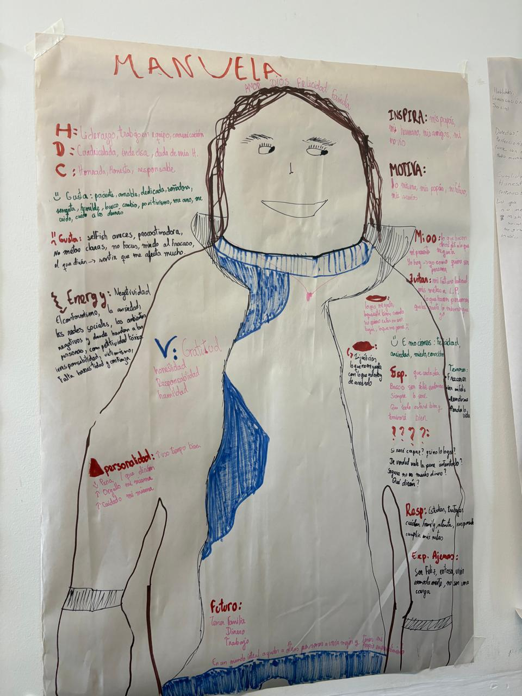
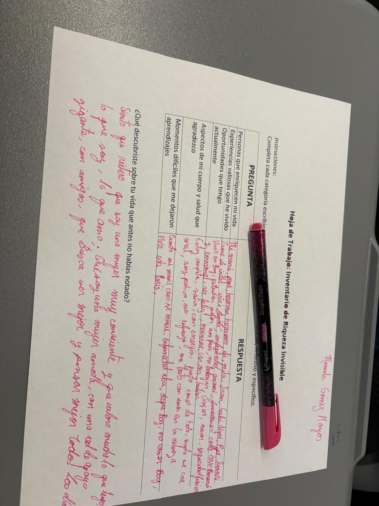
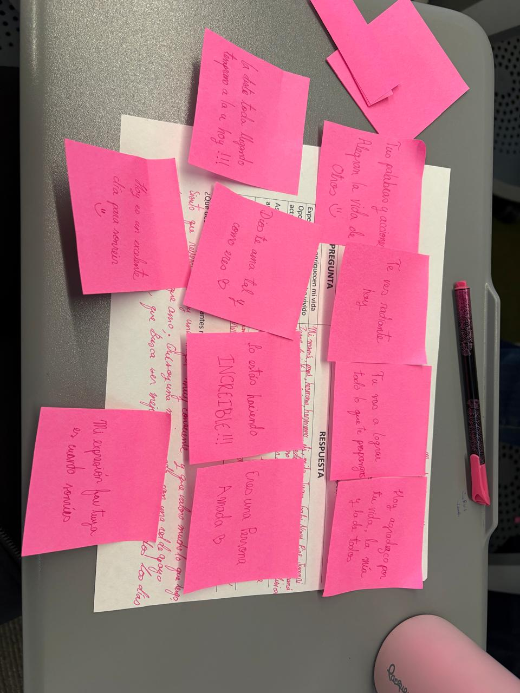
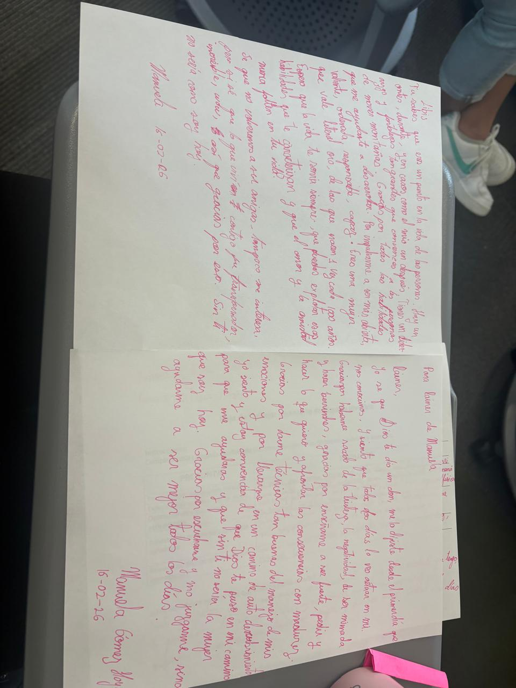
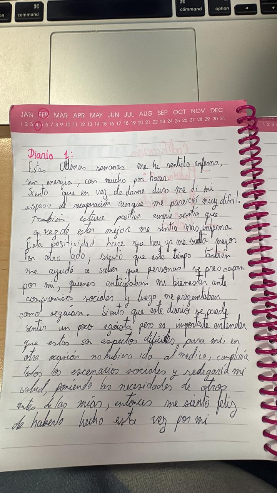
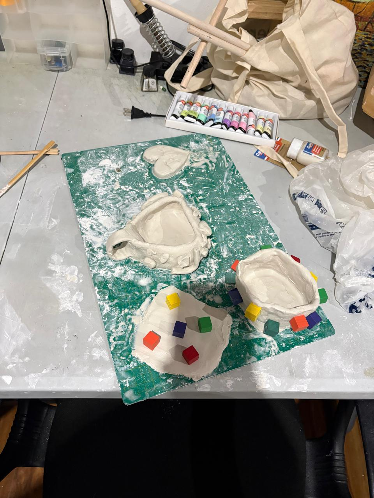
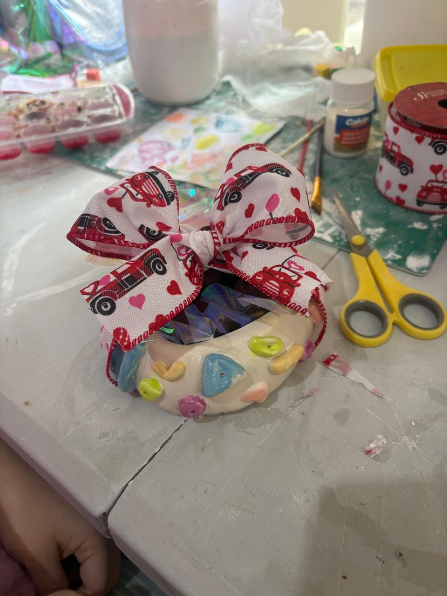

Lo que el TAC me pidió ver

El autorretrato: la primera vez que el TAC me puso frente a algo que no quería ver.
El autorretrato fue la primera vez que el TAC me puso frente a algo que no quería ver. La actividad consistía en construir una imagen de mí misma: quién soy, cómo me veo, hacia dónde voy. Lo que encontré no fue una respuesta clara. Encontré una incomodidad real ante los detalles concretos del futuro — no las metas grandes, sino los pasos específicos para llegar a ellas. Eso me lo dejó claro una foto. Llevo semanas pensando en eso.
Las cartas me sacaron de mi propia cabeza y me pusieron frente a frente con relaciones que tenía pendientes. Tuve que agradecer a personas con las que casi no hablaba. Tuve que reconocer diferencias con otras.
Fue incómodo escribirlas y más incómodo leerlas en voz alta. Pero algo en ese ejercicio resolvió cosas que yo había dejado en pausa sin darme cuenta.
El diario también fue parte de esto: el espacio más constante del curso. Un lugar para escribir sin audiencia, sin que nadie evaluara el resultado. Me enseñó a observarme con más paciencia. No transformó mi forma de pensar de un día para otro, pero me entrenó en algo que no hacía bien: detenerme a registrar lo que estaba sintiendo en vez de seguir corriendo.



El inventario, los post-its, las cartas. Cada uno resolvió algo distinto.

Una página del diario. El espacio donde aprendí a detenerme.
El taller de miedos fue donde conocí a Alvin. Alvin es mi procrastinador interno — y lo nombramos así porque la referencia de Alvin y las ardillas capturó exactamente lo que hace: es ruidoso, insistente, y siempre tiene una razón para no empezar hoy.
En ese taller tuve que mirar de frente el patrón que más me frena: sé cuáles son mis metas, tengo claridad sobre lo que quiero lograr, pero Alvin aparece en los pasos concretos y los pospone. El curso me dio herramientas para empezar a vencerlo. No desapareció. Pero ahora lo reconozco cuando llega.
Lo que cambió no fue mi autopercepción entera. El TAC no me reveló una persona distinta — me ayudó a ver con más claridad a la que ya era.
El trabajo con arcilla no fue una actividad del TAC, pero pertenece a esta sección porque ilustra algo que el curso me ayudó a sostener: la capacidad de empezar un proyecto desde cero, sostenerlo aunque cueste, y llevarlo hasta el final. La pieza terminada es evidencia de eso.


Del proceso a la pieza terminada. Empezar y sostener.